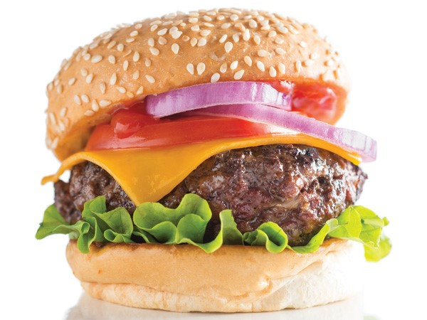

Hamburgers

Description
I can't honestly decide if steak or burgers are better, they're both phenomenal. Of course, my dad's burgers are the best, especially with potato salad and doritos on the side.
Ingredients
- Ground beef – We prefer an 80 lean/20 fat ratio for the juiciest burgers.
- Crushed crackers or Panko bread crumbs
- Worcestershire sauce
- Egg
- Milk
- Seasonings: Salt, Garlic Powder, Onion powder, Pepper, or other spices of choice.
Instructions
- First, set out a large mixing bowl and add in the ground beef, crushed crackers, egg, Worcestershire sauce, milk, and spices. Use your hands to thoroughly combine until the mixture is very smooth.
- Next, press the meat down in the bowl, into an even disk. Use a knife to cut and divide the hamburger patty mixture into 6 – 1/3 pound grill or skillet patties, or 12 thin griddle patties. Like so: Set out a baking sheet, lined with wax paper or foil, to hold the patties. One at a time, gather the patty mix and press firmly into patties of your desired thickness. You typically want hamburger patties to be slightly larger than the buns they’ll be served on since they’ll shrink a bit in the cooking process.
Place the formed patties on the baking sheet. With thick patties, press a dent in the center of each patty, so they don’t puff up while cooking.
You can stack the patties with sheets of wax paper between layers if needed.
- Then, preheat the grill or a skillet to medium heat, approximately 350-400 degrees F.
I love using a cast-iron skillet for getting that drool-worthy caramelized sear on the burgers.